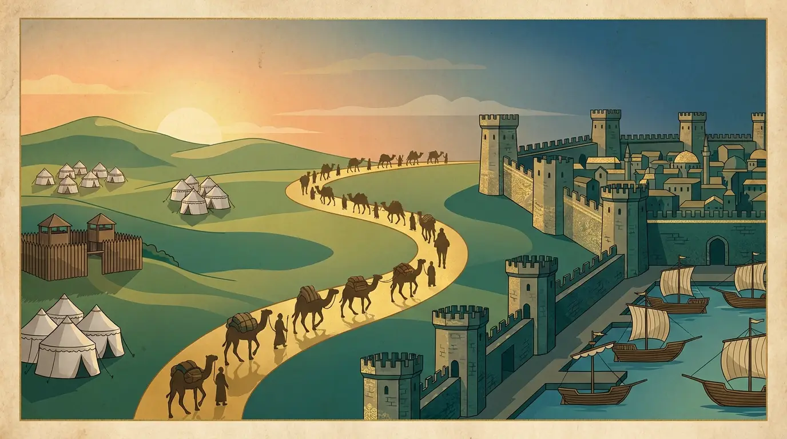

Söğüt'ten İstanbul'a — fethet, imar et, medeniyet kur

Oyuncular
Her koltuk: Sen 👤 ya da Bot 🤖 · tek başına botlara karşı oynayabilirsin
Zar yok: her tur bir Sefer Kartı çekersin — üstündeki 1–12 sayısı kadar ilerler, altındaki tarih bilgisini öğrenirsin.
Akçe ile şehir fetheder, Han→Külliye imar eder, rakipler düşünce vergi toplarsın.
İstersen tek başına botlara karşı oynayabilirsin. Her kare ve kart bir tarih dersi verir.
📖 OYUN KURALLARI
Beylikten Cihana, Türk-İslam medeniyetinin yükselişini bir tahta üzerinde yeniden yaşatan eğitsel strateji oyunudur.
Amaç
Şehirleri fethedip imar ederek servetini büyüt. Diğer herkes iflas ettiğinde son ayakta kalan kazanır.
Tur akışı — zar yok!
Sefer Kartı çek. Üstündeki 1–12 sayısı kadar ilerlersin; altındaki tarih bilgisi o sayıya bağlıdır (örn. III. Mustafa → 3, Yedikule'nin 7 kulesi → 7, 12 Hayvanlı Türk Takvimi → 12).
Sefer Meydanı'ndan her geçişte 2.000 akçe ulûfe alırsın.
Boş şehre düşersen fethedebilir ya da Bilgi sorusu ile %25 indirimli alabilirsin.
Başkasının şehrine düşersen vergi (kira) ödersin; imar arttıkça vergi katlanır.
İmar — Han 🏨 → Hamam ♨️ → Medrese 🏫 → Cami 🕌 → Külliye 🏛️
Bir bölgenin (renk grubu) tüm şehirleri sende ise imar başlar. İmar arttıkça vergi katlanır; en üst kademe Külliye'dir.
Özel kareler
Ferman & Vak'a: tarihî olay kartı. Etkisi senin mülklerine bağlanır — "1347 Kara Veba → imarlı her yapından gelir kaybı", "deniz zaferi → her limanın için kazanç".
Esaret (Yedikule): çıkmak için 500 akçe fidye, Ferman kartı ya da bir Bilgi sorusunu doğru cevapla.
Limanlar/Darphane/Vakıf/vergiler: kendi kurallarını uygular.
Botlar
Kurulumda her koltuğu Sen ya da Bot yapabilirsin. Tek kişi botlara karşı oynayabilir; botlar otomatik karar verir.